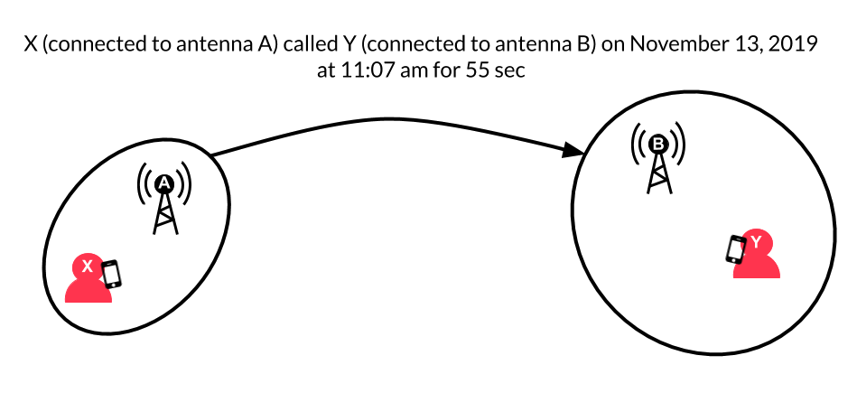
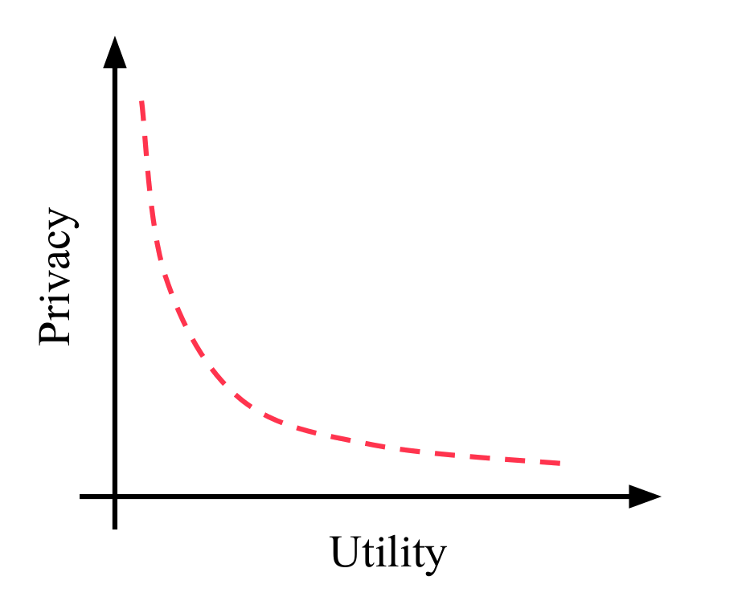
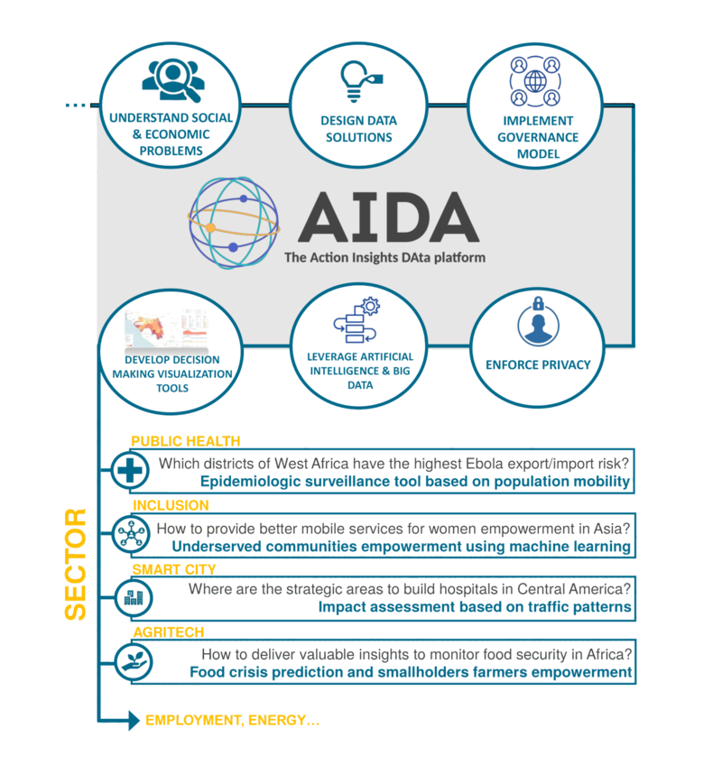

Development organisations and governments used to work mostly with ‘traditional’ sources of data, like survey and census data. Together with the rest of the World, they are now trying to combine these traditional sources with new data, of the kind produced by our phones and satellites, among others. That is what we refer to as big data. Combined with traditional survey data, big data can be incredibly useful to development actors, with levels of details and completeness that can significantly enhance decision making. However, a large chunk of this type of data is owned and/or managed by the private sector. As a result, development organisations and in some cases, governments, can depend on the willingness of these partners to share their data.
But what makes the analytical power of big data is also what makes it sensitive to share. It seems a straightforward way for organisations to share data with minimum risk would be to anonymize it before sharing. It turns out that big data is hard to anonymize, or to use a more technical term, prone to re-identification. In that context, safe data sharing requires cautions and safeguards. In some cases, those are enforced by law: for EU citizens, the General Data Protection Regulation (GDPR) tightly regulates data sharing standards and practices. But for the rest of the World, and in particular developing countries, enforcing safe data sharing practices and making sure your partners do so too can be very challenging.
Fine-grained, detailed data on individuals is extremely useful for development actors. One common type of big data used by development actors is call details records (CDR). It is provided by telecom operators and summarizes information about calls made on their network. As people use their phones, telecom operators record, when, with whom and from where calls are made. They are as a result able to trace the day of their users, assess their social network and measure their phone usage patterns in a detailed way. This rich data is extremely useful for development actors; it can be used to identify the demographic and socioeconomic status of phone users - e.g. their income or gender -, predict diseases outbreaks and even for electricity infrastructure planning.
However, the level of detail of such data hampers their anonymization, posing a great risk to privacy. The reason for that is this CDR data is fine-grained enough that only a few points can uniquely identify an individual. Pick just a handful of your calls over the past week. You are almost certainly the only one to have made calls from these specific places at these specific moments. So, if someone knows these few points in time and space are yours, and they have access to 'anonymized' data for all other days, then they know where you have been every other day. More generally, researchers have shown that four points are enough to uniquely identify 95% of people in a CDR database of 1.5M people. These points could be obtained for instance through publicly available twitter posts including information about the localization of users.
In practice, data is useful in that it helps answer specific questions; different questions require different levels of detail in the data and represent varying degrees of privacy risks. Some questions can be answered without having to go into the details of the data: in our CDR example, you might just be interested by the average distance travelled in a day by all users combined without the individual trajectories being of any use.
Depending on which question need to be addressed with the data, one can use different data sharing methods. The re-identification risk only rules out the possibility of giving unrestricted access to datasets that are too ‘detailed’ to be anonymized. It leaves open other means of sharing data in a privacy-preserving way, depending on data need – how many questions, at what pace, on what segment of the data – and the ease of implementation of the solution – how sophisticated technically, how flexible, and at what cost.
For questions that can be answered using aggregated or less precise data, traditional means of data-sharing, typically ruled by non-disclosure agreements, can be sufficient. One possibility is to release pre-computed indicators and aggregated data, with no need to release raw data. If researchers just need the average distance travelled by people based on their gender, data owners/managers can release this specific information to the public with limited direct risk for the individuals in the database. Another possibility is the limited release of anonymized and transformed data, where the dataset is coarsened to ensure no individuals can be re-identified - like blurring the faces in pictures. This method can be used if for instance researchers need only a high-level view on mobility patterns, but it lacks flexibility as the coarsening of the data is done once and for all before release.
For questions that require detailed or real time data, data owners/managers can build partnerships with vetted organisations to allow remote access to their data. The data owner/manager keeps close control of the data, as it never leaves its premise or only through highly secure pathways. Any ‘applicant’ wanting to get access to that data is thoroughly vetted and their access is guided by a clear data governance protocol. This allows for near real-time data to be used by trusted third-parties. For instance, Dalberg Data Insights is considered a trusted partner by a telecom operator and is able under strict contractual guidelines to bring its own server at their premise and perform analysis from within their system. This method is constraining in that it requires strong engagement from the data owner/manager and a close relationship between the data owner/manager and the party performing analysis.
For a less restrictive access to detailed and/or real time data, researchers use a more technically sophisticated method known as differential privacy. The goal of the model is to ensure no individual in the dataset can be singled out from asking targeted questions. It builds on a mathematical definition of the privacy risk to decide how risky a given question is. It then adds some ‘errors’ to the data, also called noise, and calibrates the amount of noise to provide the most precise answer possible while ensuring privacy. One way to visualize this is that for each user, the algorithm spins a wheel that can land on true or false, deciding to keep the original data or replace it with a random value (noise). If the question is extremely sensitive, you might add a lot of noise and have a large part of the wheel that gives you the wrong answer. This method requires an added layer of complexity to a data infrastructure and is not a widely adopted practice even by leaders of the ICT and technology sector.
Privacy risks deepen the need for trust between partners sharing data, as there is no way to make a raw dataset ‘harmless’ once and for all and share it as a commodity. This requires strong relationships between data owners/managers and those they share their data with, and/or the introduction of sophisticated anonymization processes, possibly through intermediaries. Both require time and resources to build and maintain. Some organisations can afford the expense and can build their internal capacity to become trusted data partners on their own. For instance, the U.S. Census Bureau recently announced that it would protect some of their own data, the 2018 End-to-End Census Test, using differential privacy, which sends a strong signal on their ability to safely manage other’s data. However, not all governments and development organisations have the necessary resources to quickly integrate cutting-edge privacy preserving methods to their structure.
At Dalberg Data Insights, we develop the AIDA data platform to build trust and facilitate data sharing with development actors. Trusted intermediaries can play a role as honest brokers and data safety seals, and ease access to data insights for resource-poor development actors. AIDA serves, among others, as a safe marketplace for data, by enabling the integration, anonymization, and aggregation of different data sources to allow the development of data products. Other projects, such as OPAL project or Telefonica NEXT serve a similar purpose with different approaches.
AIDA not only leverages privacy preserving best-practice but also robust data governance and operating model. The technical aspect of safe data sharing is just one piece of the puzzle. Developing a strong governance, a set of partnerships and a solid operating model remain critical to create a sustainable framework to ensure trust and safety. The issue of data governance is a particularly critical one, as demonstrated for instance by Dalberg’s ongoing work on India’s Digital ID program and its consequences for citizen. Finding the right answer to these questions, and how it interlinks with technical aspects, is the prerequisite for an efficient use of sensitive data for the benefit of society.